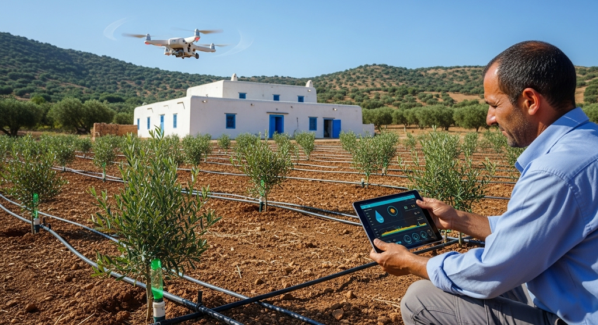
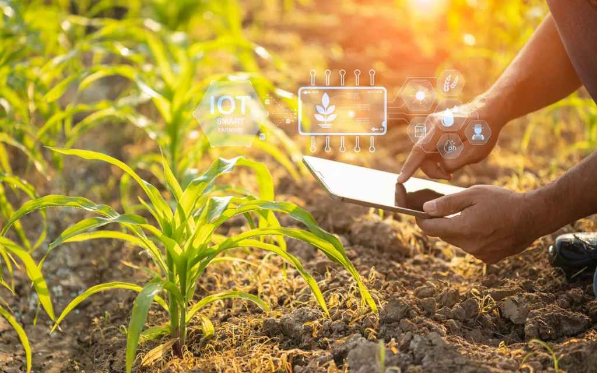

Du traditionnel au smart - connectez votre ferme à l'avenir.
Solutions de modernisation abordables pour une agriculture plus efficace.
Découvrir nos solutions
Notre Vision : Un Futur Intelligent
Nous démocratisons l'agriculture intelligente. Découvrez comment notre engagement envers l'innovation "retrofit" relève les défis mondiaux et crée un avenir durable pour tous.
En savoir plus sur nousSimple, Efficace, Connecté
De l'installation "retrofit" sur votre équipement existant à la gestion via notre cloud sécurisé, découvrez notre processus simple en trois étapes pour optimiser votre ferme.
Voir le processus

Solutions Modulaires Puissantes
Irrigation intelligente, contrôle des pompes, surveillance environnementale. Explorez nos solutions conçues pour optimiser vos ressources et maximiser vos rendements.
Explorer nos solutionsVotre Agronome Personnel
Un problème avec vos cultures ? Décrivez-le à notre Conseiller IA et recevez une analyse et des recommandations instantanées pour protéger votre récolte.
Essayer le conseiller IA
